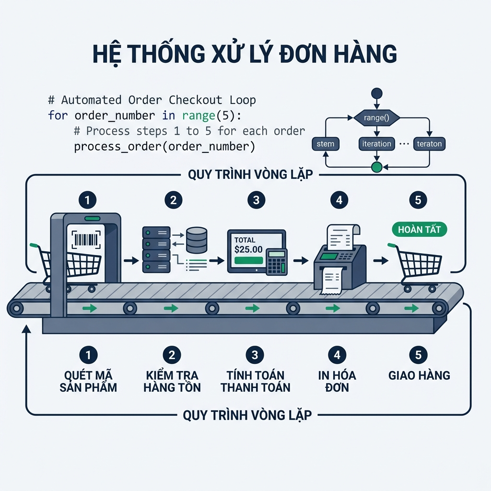

Khái niệm vòng lặp và câu lệnh for
1. Tại sao cần sử dụng vòng lặp trong lập trình?
Hãy tưởng tượng bạn đang xây dựng tính năng xử lý hóa đơn tự động cho một hệ thống thương mại điện tử. Khi khách hàng đặt mua 5 sản phẩm, bạn cần tính tổng số tiền thanh toán, áp dụng mã giảm giá và gửi thông báo xác nhận cho từng sản phẩm trong hóa đơn.
Nếu không có câu lệnh vòng lặp, giải pháp duy nhất là bạn phải viết thủ công 5 dòng lệnh lặp đi lặp lại để xử lý từng sản phẩm. Điều gì sẽ xảy ra khi một hóa đơn bán buôn có 100 sản phẩm hoặc hệ thống cần xử lý 10.000 đơn hàng mỗi ngày? Việc sao chép mã nguồn 10.000 lần sẽ làm tệp code trở nên khổng lồ, làm tăng nguy cơ sai sót khi cần chỉnh sửa logic và khiến chương trình cực kỳ khó bảo trì.
Làm sao để máy tính tự động thực thi một công việc nhiều lần với số lượng bất kỳ mà chỉ cần viết mã nguồn đúng một lần? Đó chính là lý do chúng ta cần đến cấu trúc vòng lặp for kết hợp cùng hàm range() trong Python.

Hình 1.1: Quy trình xử lý tự động thực tế trong bài học Lesson 01 - Khái niệm vòng lặp và câu lệnh for.
2. Cú pháp và cơ chế hoạt động của câu lệnh for
2.1. Cú pháp cơ bản và cơ chế duyệt chuỗi ký tự (String Iteration)
Vòng lặp for trong Python được sử dụng để duyệt qua từng phần tử của một tập hợp dữ liệu theo thứ tự từ đầu đến cuối. Khi áp dụng cho một chuỗi ký tự (string), vòng lặp sẽ trích xuất từng ký tự một ở mỗi bước lặp.
for loop_variable in string_data:
# Khối lệnh thực thi ở mỗi bước lặp (lùi vào 4 khoảng trắng)loop_variable: Biến tạm thời nhận giá trị của từng ký tự trong chuỗi ở mỗi lần lặp. Biến này tự động thay đổi giá trị sau mỗi vòng lặp.in: Từ khóa bắt buộc trong Python dùng để chỉ định tập dữ liệu cần duyệt.string_data: Chuỗi ký tự nguồn mà vòng lặp sẽ duyệt qua.- Dấu hai chấm (
:) và Thụt lề (Indentation): Đánh dấu bắt đầu khối lệnh thuộc về vòng lặp. Tất cả các câu lệnh bên trong phải thụt lề chính xác 4 khoảng trắng.
Yêu cầu bài toán:
Kiểm tra từng ký tự trong mã xác nhận đơn hàng "ORD9852" để in ra định dạng kiểm định từng ký tự.
# Mã xác nhận đơn hàng cần kiểm tra
order_code = "ORD9852"
# Duyệt qua từng ký tự trong mã đơn hàng
for char in order_code:
print("Ký tự kiểm tra:", char)2.2. Duyệt dải số tự động với hàm range()
Khi cần lặp lại một khối lệnh với số lần xác định trước, Python cung cấp hàm bổ trợ range() để tạo ra một dải số nguyên tự động.
range(stop)
range(start, stop)
range(start, stop, step)start: Giá trị bắt đầu của dải số (mặc định là 0 nếu không khai báo).stop: Giá trị kết thúc của dải số. Lưu ý quan trọng: dải số sinh ra chỉ chạy đếnstop - 1(không bao gồm giá trịstop).step: Bước nhảy giữa các số liên tiếp (mặc định là 1 nếu không khai báo).
Yêu cầu bài toán:
Tạo vòng lặp in tiến độ kiểm kê 5 kiện hàng trong kho từ số thứ tự 1 đến 5.
# Lặp từ 1 đến 5 (stop = 6 để bao gồm cả số 5)
for item_index in range(1, 6):
print("Đang kiểm kê kiện hàng số:", item_index)2.3. Mô hình tích lũy giá trị (Accumulator Pattern) với vòng lặp for
Mô hình tích lũy là một kỹ thuật phổ biến trong lập trình doanh nghiệp, trong đó một biến tổng được khởi tạo trước vòng lặp và liên tục cập nhật cộng dồn giá trị qua mỗi bước lặp.
accumulator_variable = 0
for current_number in range(start, stop):
accumulator_variable += current_numberaccumulator_variable = 0: Khởi tạo biến lưu trữ giá trị tích lũy ban đầu ngoài vòng lặp.+=: Toán tử cộng dồn giá trị hiện tại vào biến tích lũy ở mỗi bước lặp.
Yêu cầu bài toán:
Tính tổng phí vận chuyển cộng dồn cho 4 đơn hàng đầu tiên, biết phí mỗi đơn tăng dần theo số thứ tự (ví dụ: 10.000 VNĐ, 20.000 VNĐ,...).
# Biến tích lũy tổng phí giao hàng
total_shipping_fee = 0
# Duyệt qua 4 đơn hàng với bước giá tăng 10.000 VNĐ
for order_number in range(1, 5):
fee_for_current_order = order_number * 10000
total_shipping_fee += fee_for_current_order
print("Đơn hàng", order_number, "- Phí ship:", fee_for_current_order, "VNĐ")
print("Tổng phí vận chuyển 4 đơn hàng:", total_shipping_fee, "VNĐ")2.4. Mô phỏng cơ chế vận hành từng bước (Step-by-Step Execution Visualizer)
Công cụ dưới đây mô phỏng chính xác cách bộ biên dịch Python từng bước cập nhật biến đếm và biến tích lũy trong bộ nhớ RAM qua từng vòng lặp.
| Tên biến | Kiểu dữ liệu | Giá trị hiện tại |
|---|---|---|
| order_count | int | Chưa khởi tạo |
| total_revenue | int | 0 |
3. Các ví dụ ứng dụng thực tiễn
3.1. Ví dụ 3.1: Duyệt dải số và in tiến độ tự động (Minimal Syntax)
Chương trình cơ bản sử dụng hàm range(start, stop) để lặp qua danh sách thứ tự công việc và in ra thông báo cho người dùng.
Yêu cầu bài toán:
Tạo vòng lặp in báo cáo tiến độ xử lý tự động cho 5 kiện hàng thương mại điện tử.
# In tiêu đề báo cáo
print("=== BÁO CÁO TIẾN ĐỘ KIỂM KÊ HOÀN TẤT ===")
# Duyệt qua các bước đếm từ 1 đến 5
for step in range(1, 6):
print("Kiện hàng số", step, "đã kiểm duyệt xong.")Trong ví dụ trên, hàm range(1, 6) trả về dải số [1, 2, 3, 4, 5]. Câu lệnh print bên trong khối lặp được thực thi 5 lần tương ứng với từng giá trị biến step.
3.2. Ví dụ 3.2: Tính tổng điểm thưởng tích lũy cho đơn hàng (Business Logic)
Chương trình ứng dụng mô hình tích lũy giá trị (Accumulator Pattern) để cộng dồn điểm thưởng cho khách hàng khi thực hiện chuỗi đơn hàng thành công.
Yêu cầu bài toán:
Khách hàng hoàn thành 5 đơn hàng liên tiếp. Với mỗi đơn hàng thành công, khách hàng được thưởng số điểm tương ứng với thứ tự đơn hàng nhân với 15 điểm. Tính tổng số điểm thưởng tích lũy được.
# Khởi tạo biến lưu tổng điểm thưởng
total_loyalty_points = 0
# Duyệt qua 5 đơn hàng từ 1 đến 5
for order_index in range(1, 6):
earned_points = order_index * 15
total_loyalty_points += earned_points
print("Đơn hàng thứ", order_index, "- Nhận:", earned_points, "điểm")
print("Tổng điểm thưởng tích lũy sau 5 đơn:", total_loyalty_points, "điểm")Biến total_loyalty_points giữ vai trò tích lũy tổng số điểm nhận được qua từng lần lặp. Sau khi kết thúc vòng lặp, giá trị cuối cùng thu được là tổng chính xác của cả 5 lần cộng dồn.
3.3. Ví dụ 3.3: Kiểm tra định dạng mã xác thực hóa đơn e-commerce (Enterprise Scenario)
Trong hệ thống thực tế, mã hóa đơn thường là một chuỗi ký tự kết hợp chữ và số. Chương trình duyệt qua từng ký tự của chuỗi để xác thực định dạng và đếm ký tự hợp lệ.
Yêu cầu bài toán:
Cho chuỗi mã hóa đơn "INV-2024". Hãy duyệt qua từng ký tự, lọc bỏ ký tự gạch nối "-" và đếm chính xác số ký tự dữ liệu chuẩn.
# Mã hóa đơn cần xử lý
invoice_code = "INV-2024"
# Khởi tạo biến đếm ký tự hợp lệ
valid_char_count = 0
# Duyệt từng ký tự trong chuỗi mã hóa đơn
for char in invoice_code:
if char != "-":
valid_char_count += 1
print("Ký tự hợp lệ:", char)
print("Mã hóa đơn:", invoice_code)
print("Tổng số ký tự dữ liệu chuẩn:", valid_char_count)Chương trình trên kết hợp vòng lặp for kiểm tra từng ký tự trong chuỗi với câu lệnh điều kiện if để bỏ qua các ký tự phân cách gạch nối, đảm bảo dữ liệu đầu vào đạt tiêu chuẩn trước khi lưu trữ vào cơ sở dữ liệu.
4. Tổng kết bài học
4.1. Kiến thức trọng tâm
- Vòng lặp
forgiúp tự động hóa các thao tác lặp đi lặp lại, tối ưu dung lượng mã nguồn và hạn chế sai sót. - Hàm
range(start, stop, step)dùng để tạo dải số nguyên tự động với quy tắc không bao gồm giá trịstop. - Vòng lặp
forcó thể duyệt trực tiếp qua từng ký tự của một chuỗi string. - Kỹ thuật tích lũy (Accumulator Pattern) yêu cầu khởi tạo biến tổng ban đầu trước vòng lặp và cập nhật bằng toán tử
+=.
4.2. Các lỗi thường gặp & Lưu ý thực tế
Lỗi lệch 1 đơn vị (Off-by-one Error) với hàm range()
Lỗi phổ biến nhất của các lập trình viên mới là quên mất range(1, 5) chỉ chạy từ 1 đến 4. Để duyệt từ 1 đến 5, bạn bắt buộc phải truyền giá trị kết thúc là 6: range(1, 6).
Quên khởi tạo biến tích lũy trước vòng lặp
Nếu bạn sử dụng toán tử cộng dồn += inside vòng lặp mà chưa khai báo biến tổng ở bên ngoài trước đó, Python sẽ lập tức báo lỗi NameError vì biến chưa tồn tại trong bộ nhớ.